离别
有马公生亲启：
给刚才还在一起的人写信，感觉好奇怪。 你是个很过分的家伙。迟钝、慢性子、糊涂的笨蛋。 我第一次看到你的演奏，是5岁的时候，当时是我在场的钢琴教室的发表会。 小不点模样的你在登场时候，屁股撞到椅子引得全场大笑。 你在偌大的钢琴前，用指尖弹下第一个音时，便成为了我憧憬的对象。 音符像24色调色板一样变得多姿多彩，跃动地组成了旋律。 那时坐在我邻座的孩子还哭了出来，让我吃了一惊。 明明那么厉害，你却放弃了弹奏钢琴。 如此改变了我的人生，真是个过分的家伙。
在得知和你上同一个中学时，我真的兴高采烈。 怎么才能跟你打个招呼呢？是不是再去趟小卖部买个面包呢？ 但是结果，还是只好远远观望你。 因为你和朋友们的关系实在太亲密了，没有我插足的空当。 我在孩童时代就接受过手术，还会定期前往医院。 因为初中一年级的病倒，所以此后反反复复地入院和出院。 住院的时光过得极其漫长，基本上也没法去到学校上课。 我也知道，自己的身体情况并不是很好。 一天夜里，听到我父母在医院接待室的哭泣声，我明白自己时日已不长。 于是就是在那时，我决定行动起来。
给刚才还在一起的人写信，感觉好奇怪。 你是个很过分的家伙。迟钝、慢性子、糊涂的笨蛋。 我第一次看到你的演奏，是5岁的时候，当时是我在场的钢琴教室的发表会。 小不点模样的你在登场时候，屁股撞到椅子引得全场大笑。 你在偌大的钢琴前，用指尖弹下第一个音时，便成为了我憧憬的对象。 音符像24色调色板一样变得多姿多彩，跃动地组成了旋律。 那时坐在我邻座的孩子还哭了出来，让我吃了一惊。 明明那么厉害，你却放弃了弹奏钢琴。 如此改变了我的人生，真是个过分的家伙。
在得知和你上同一个中学时，我真的兴高采烈。 怎么才能跟你打个招呼呢？是不是再去趟小卖部买个面包呢？ 但是结果，还是只好远远观望你。 因为你和朋友们的关系实在太亲密了，没有我插足的空当。 我在孩童时代就接受过手术，还会定期前往医院。 因为初中一年级的病倒，所以此后反反复复地入院和出院。 住院的时光过得极其漫长，基本上也没法去到学校上课。 我也知道，自己的身体情况并不是很好。 一天夜里，听到我父母在医院接待室的哭泣声，我明白自己时日已不长。 于是就是在那时，我决定行动起来。
为了能在天堂不感到后悔，我任性地做了很多事情。
戴上一直害怕的隐形眼镜、不顾体重增长地吃东西、装作了不起似的去发号施令，
还有对着乐谱肆意地演奏音乐。
另外，还有说了一个谎——那就是：宫园薰喜欢渡亮太。
而正是这个谎言，把你带到了我的面前。
请替我向他道个歉吧，不过我觉得他很快就会把我忘了吧。
尽管把他当作朋友会很有趣吧，可我果然还是喜欢一心一意的人。
之后，还请替我向椿道个歉。 毕竟我只是个匆匆路过人间的人，不想给其他人留下什么奇怪的印象。 于是也没把这心事告诉小椿。 不过就算我开门见山地去拜托她说“请把有马君介绍给我”，我想她也不会给我顺利的反馈吧。 因为，小椿她最喜欢的就是你啊！ 周围人都明白这回事，唯独你和她蒙在了鼓里。 因为我拙劣的谎言而出现在我面前的你，跟我想象的有些不一样。 更阴暗、自卑、固执，还是个偷拍狂。 比想象中的声音更小，更像是个男孩子。 但跟我想象中一样的是，你是个温柔的人。 大胆地从桥上一跃跳进河里，即使很冷，却也感觉良好。 同电车赛跑的那一次，我可是真心觉得能赢下来。 在音乐室里一起眺望的满月，就像是馒头一样，看起来很好吃。 我们两个人乘在自行车上一起唱“小星星”时，你还跑调了呢，声乐方面真心差劲得让人绝望。 晚上跑去学校，认为一定会发生什么。 雪花像飞舞的樱花花瓣似的。明明是个演奏家，心里却一直在想与舞台无关的事，总觉得好奇怪。 无法忘记的光景，居然都是这些细碎的情节，很奇怪吧？
你究竟是怎么样的呢？我能逗留在谁的心里呢？ 我，可以住进你的心里吗？哪怕只是一点点就够了。 一点也好，你能回想起我的事情吗？ 一切重置我才不要呢，不要忘记了哦，和我约定好了哦。 果然是你的话，真的太好了。 能够传达得到吗？能够传达得到就好了呢！ 有马公生，我喜欢你。 喜欢你，我喜欢你。 没能把可露丽蛋糕全部吃掉，对不起啦。 打了你那么多次，也对不起啦。 一直那么任性，对不起啦。 真的、真的，对不起啦。
谢谢你——
之后，还请替我向椿道个歉。 毕竟我只是个匆匆路过人间的人，不想给其他人留下什么奇怪的印象。 于是也没把这心事告诉小椿。 不过就算我开门见山地去拜托她说“请把有马君介绍给我”，我想她也不会给我顺利的反馈吧。 因为，小椿她最喜欢的就是你啊！ 周围人都明白这回事，唯独你和她蒙在了鼓里。 因为我拙劣的谎言而出现在我面前的你，跟我想象的有些不一样。 更阴暗、自卑、固执，还是个偷拍狂。 比想象中的声音更小，更像是个男孩子。 但跟我想象中一样的是，你是个温柔的人。 大胆地从桥上一跃跳进河里，即使很冷，却也感觉良好。 同电车赛跑的那一次，我可是真心觉得能赢下来。 在音乐室里一起眺望的满月，就像是馒头一样，看起来很好吃。 我们两个人乘在自行车上一起唱“小星星”时，你还跑调了呢，声乐方面真心差劲得让人绝望。 晚上跑去学校，认为一定会发生什么。 雪花像飞舞的樱花花瓣似的。明明是个演奏家，心里却一直在想与舞台无关的事，总觉得好奇怪。 无法忘记的光景，居然都是这些细碎的情节，很奇怪吧？
你究竟是怎么样的呢？我能逗留在谁的心里呢？ 我，可以住进你的心里吗？哪怕只是一点点就够了。 一点也好，你能回想起我的事情吗？ 一切重置我才不要呢，不要忘记了哦，和我约定好了哦。 果然是你的话，真的太好了。 能够传达得到吗？能够传达得到就好了呢！ 有马公生，我喜欢你。 喜欢你，我喜欢你。 没能把可露丽蛋糕全部吃掉，对不起啦。 打了你那么多次，也对不起啦。 一直那么任性，对不起啦。 真的、真的，对不起啦。
谢谢你——
他们
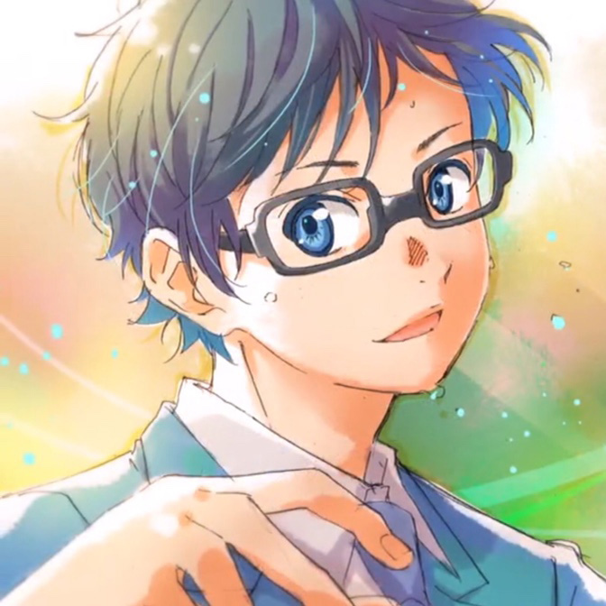
有马公生（ありま こうせい）
声优：花江夏树 钢琴演奏：阪田知树
生日：3月28日 星座：白羊座
"为我拭去那层灰尘的人可是你喔。我看起来很痛苦吗，真是伤脑筋。痛苦是当然的，因为我航行在没有海图的海面啊。挑战和创造都是很痛苦的啊，但是很充实，所以，谢谢你。"
宫园薰（みやぞの かをり）
声优：种田梨沙 小提琴演奏：筱原悠那
生日：7月4日 星座：巨蟹座
"春天的最后一场雪，你我的最后一次相聚，能遇见你是最幸福的事了，就此分别吧！请继续向前，迎接樱花漫溢的四月，但请不要忘记我，友人A……"
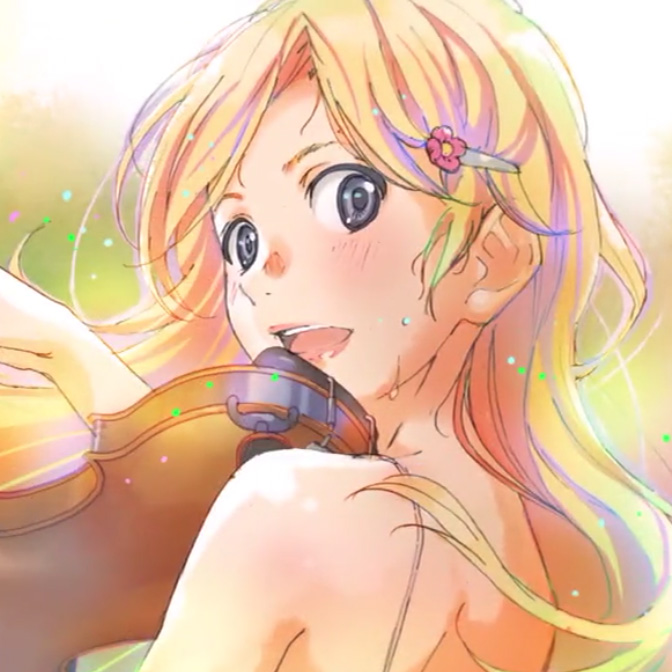
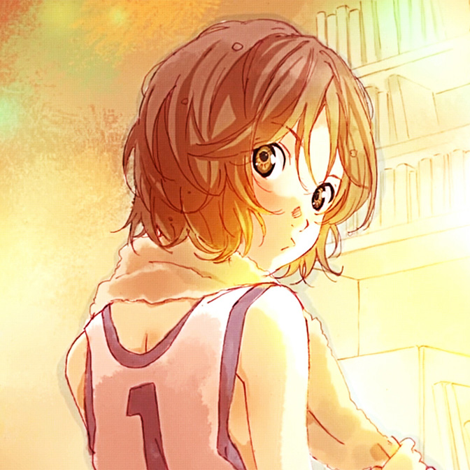
泽部椿（さわべつばき）
声优：佐仓绫音
生日：5月19日 星座：金牛座
"你的青春是什么？ 放学后却一个人在教室？ 14岁的青春是不会来第二次的！"
渡亮太（わたり りょうた）
声优：逢坂良太
生日：4月14日 星座：白羊座
"男人只要去行动就好，做得到或做不到，女孩子会来告诉你的。"
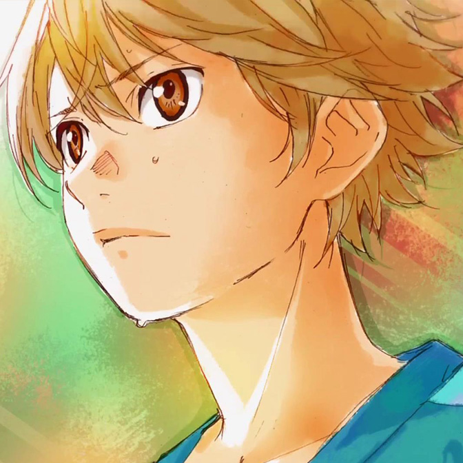
故事
有马公生的母亲一心想把有马培育成举世闻名的钢琴家，而公生也不负母亲的期望，在小学时就赢得许多钢琴比赛的大奖。11岁的公生要参加欧洲音乐赛时，他的母亲过世，从此他变得讨厌钢琴，慢慢放弃了演奏。在他14岁的春天，公生偶遇美少女小提琴手宫园薰，并被薰的音乐吸引。公生被薰误会是偷拍狂魔而留下了不好的印象，在青梅竹马小椿的介绍下，公生和薰成为了好朋友。
公生等人和薰踩点赶到比赛会场，比赛场上紧张凝重的空气让公生想起母亲的事。公生、小椿、阿渡三人留下观看比赛，公生很久没有听过现场演奏，他隐约感到不安，但内心仍然向往着音乐。终于轮到薰出场了，她对音乐的独特理解赢得全场的掌声，也公生让沉寂许久的音乐之心跳动起来。公生渐渐喜欢上了薰，可薰却喜欢阿渡，纠结的三角恋上演
公生无法听到自己所弹奏的曲调，因此放弃了钢琴演奏。薰鼓励公生不要放弃对音乐的热爱，邀请公生在比赛时担任她的伴奏者。公生觉得自己无法胜任，四处躲着薰。小椿希望公生振作起来，于是和薰联合起来，对公生采取疯狂的洗脑计划。薰在天台上找到公生，并成功说服他一起演奏，可比赛早已开始.
在小椿和阿渡的帮助下，公生和薰及时赶到比赛会场。公生对自己很没信心，赛前一直拼命练习，薰的鼓励给了他力量，两人登台表演的时刻到了。一开始他们俩配合的十分默契，但公生始终被心魔困扰，他突然无法听到弹奏的钢琴声，无奈下只好放弃伴奏，剩下薰一个人演奏着小提琴
薰在演奏结束时突然晕倒，公生等人来到医院看望她。由于比赛中状况不断，薰失去决赛资格，公生对此十分愧疚。薰却毫无怨言，她强烈希望公生能够继续弹奏钢琴，并以公生的道歉要求他参加钢琴大赛。在另一边，小椿被自己曾经憧憬的前辈告白，但心里却没有涌出激动的恋爱心情......
公生等人和薰踩点赶到比赛会场，比赛场上紧张凝重的空气让公生想起母亲的事。公生、小椿、阿渡三人留下观看比赛，公生很久没有听过现场演奏，他隐约感到不安，但内心仍然向往着音乐。终于轮到薰出场了，她对音乐的独特理解赢得全场的掌声，也公生让沉寂许久的音乐之心跳动起来。公生渐渐喜欢上了薰，可薰却喜欢阿渡，纠结的三角恋上演
公生无法听到自己所弹奏的曲调，因此放弃了钢琴演奏。薰鼓励公生不要放弃对音乐的热爱，邀请公生在比赛时担任她的伴奏者。公生觉得自己无法胜任，四处躲着薰。小椿希望公生振作起来，于是和薰联合起来，对公生采取疯狂的洗脑计划。薰在天台上找到公生，并成功说服他一起演奏，可比赛早已开始.
在小椿和阿渡的帮助下，公生和薰及时赶到比赛会场。公生对自己很没信心，赛前一直拼命练习，薰的鼓励给了他力量，两人登台表演的时刻到了。一开始他们俩配合的十分默契，但公生始终被心魔困扰，他突然无法听到弹奏的钢琴声，无奈下只好放弃伴奏，剩下薰一个人演奏着小提琴
薰在演奏结束时突然晕倒，公生等人来到医院看望她。由于比赛中状况不断，薰失去决赛资格，公生对此十分愧疚。薰却毫无怨言，她强烈希望公生能够继续弹奏钢琴，并以公生的道歉要求他参加钢琴大赛。在另一边，小椿被自己曾经憧憬的前辈告白，但心里却没有涌出激动的恋爱心情......
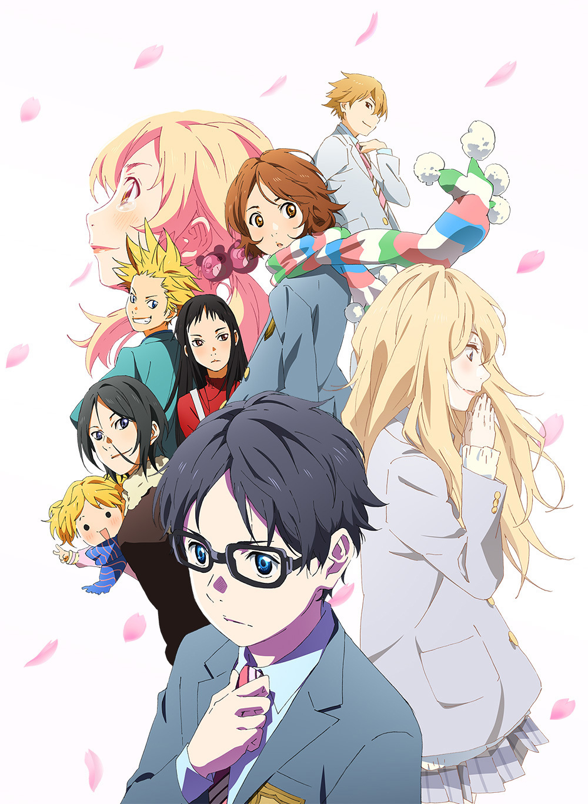
"eloim essaim、eloim essaim.请聆听我的呼唤。"
アゲイン .mp3
…………
本打算像往常一样去探望薰的公生在路上遇到了阿渡，看到阿渡与薰的甜蜜模样，公生感到十分失落。公生又一次发现阿渡已经先一步前去拜访，于是没有去探病。小椿对于无法正视自己心情的公生感到焦虑，她替公生说出了心里话，并大胆对公生表白。此时薰的病情突然严重起来
薰的病情突变，正好在场的公生由于震惊而再次陷入颓废之中。过去的心理阴影在头脑中浮现，公生又变成了独自一人。公生意外收到了薰的来信，他带着薰最爱的点心可露丽来到医院，在薰的要求下，公生背着薰来到天台。此时下起了雪，薰和公生在雪中相拥。不久，薰的手术开始进行，而公生也开始了比赛.
五彩斑斓的音色中透漏着哀伤，公生用心回应着大家的期望，更想传达给住进他心房的薰。小提琴的声音回响在公生耳边，薰那活泼的身影仿佛就在公生的眼前，这场不存在的合奏记录着两人快乐的回忆。看着手中的信公生明白了薰对自己的感情，这份感情将会永远伴随公生的成长。
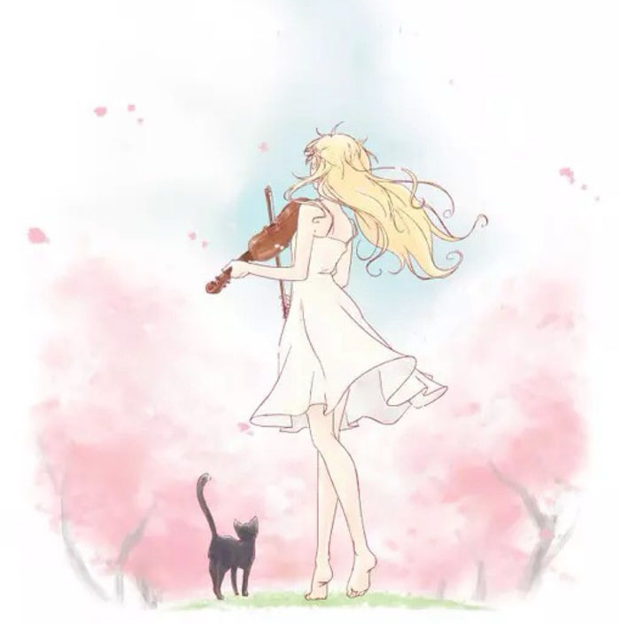
回忆
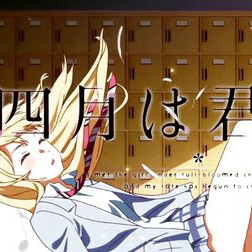
单调·多彩
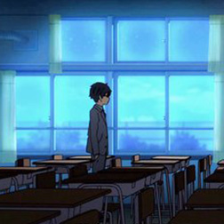
友人A
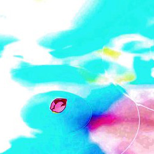
春光里
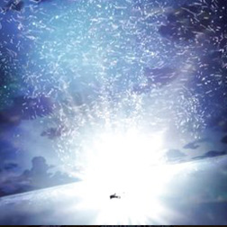
启程
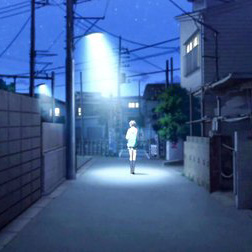
阴天
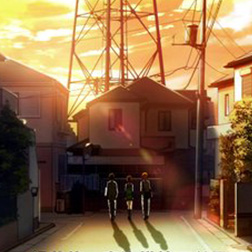
归途
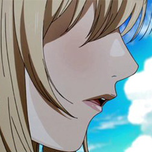
暗影低语
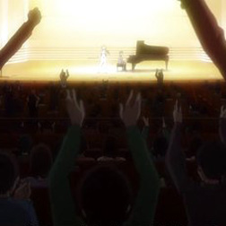
回响